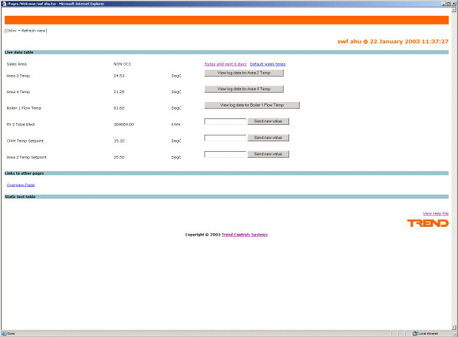

). Disse skærmområder ses normalt ganske tydeligt
på grund af den tekst, der fremkommer enten i eller ved siden af området.
). Disse skærmområder ses normalt ganske tydeligt
på grund af den tekst, der fremkommer enten i eller ved siden af området.De fleste af de
oplysninger, som præsenteres for brugeren, fremkommer på de oprettede
skematiske sider. Ved at klikke på visse dele af en side vil noget udføres
afhængigt af, hvordan 963 er indstillet. Når musen bevæges hen over den
del af skærmen, der kan gøre et eller andet, ændres den til en hånd (). Disse skærmområder ses normalt ganske tydeligt
på grund af den tekst, der fremkommer enten i eller ved siden af området.
Sådan ses skematiske sider:
1 Gå til 963-Serveren som beskrevet i kapitlet ‘Tilslutning til 963-Serveren’ i denne vejledning.
2 Log på ved at indtaste dit brugernavn og password og klikke på ‘Log på’ som beskrevet i kapitlet ‘Log På’. 963-Serverens start-side fremkommer.
3 Klik på ‘Skematik’. Et yderligere vindue med en skematisk side indstillet til at komme frem, når du logger på, åbnes.
4 Brug knapperne på de forskellige sider for at komme frem til den ønskede side.
Når siden fremkommer, kan du se oplysninger og foretage justeringer, hvis du har autoritet til dette. Ved at klikke på forskellige af sidens objekter kan man gå fra side til side og udføre foreskellige handlinger, som for eksempel at foretage justeringer, se grafer osv. På siden kan man se tydelige oplysninger om, hvad der kan gøres. Tabellen nedenfor nævner de mest almindelige handlinger, og der henvises til de tilsvarende kapitler i denne vejledning for yderligere oplysninger.
|
|
Hvis man får adgang til 963-Serveren via andre typer browsere, er kun en del af disse funktioner tilgængelige, og det skematiske data vises som en simpel tekstbaseret tabel, der opdateres hvert 20. sekund.

Denne side er delt i tre. Det første område består af alle dynamiske objekter på siden. Vises disse som en knap, kan man justere værdien. Sidens andet område består af sidens link, og det endelige område viser statisk tekst.